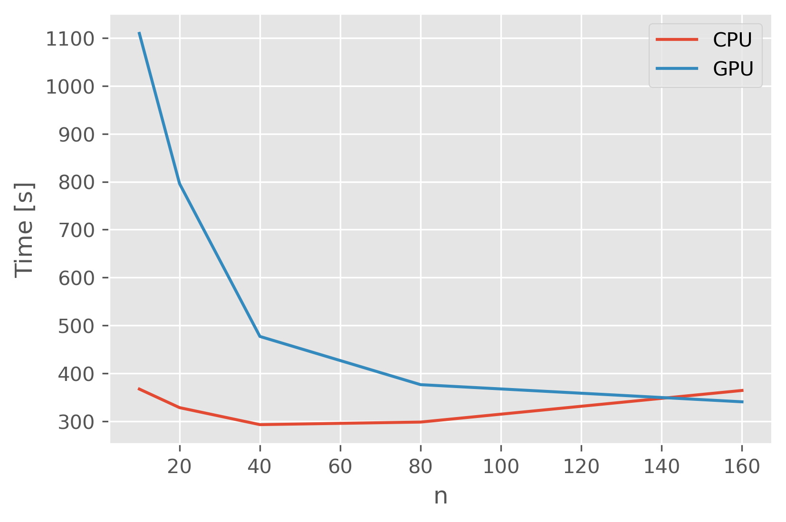
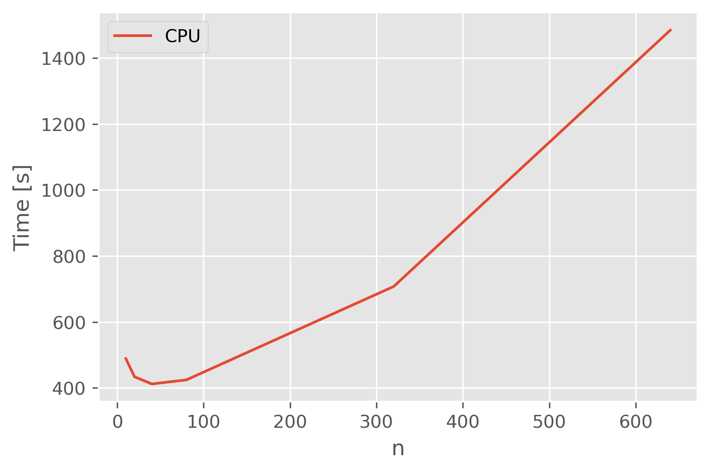
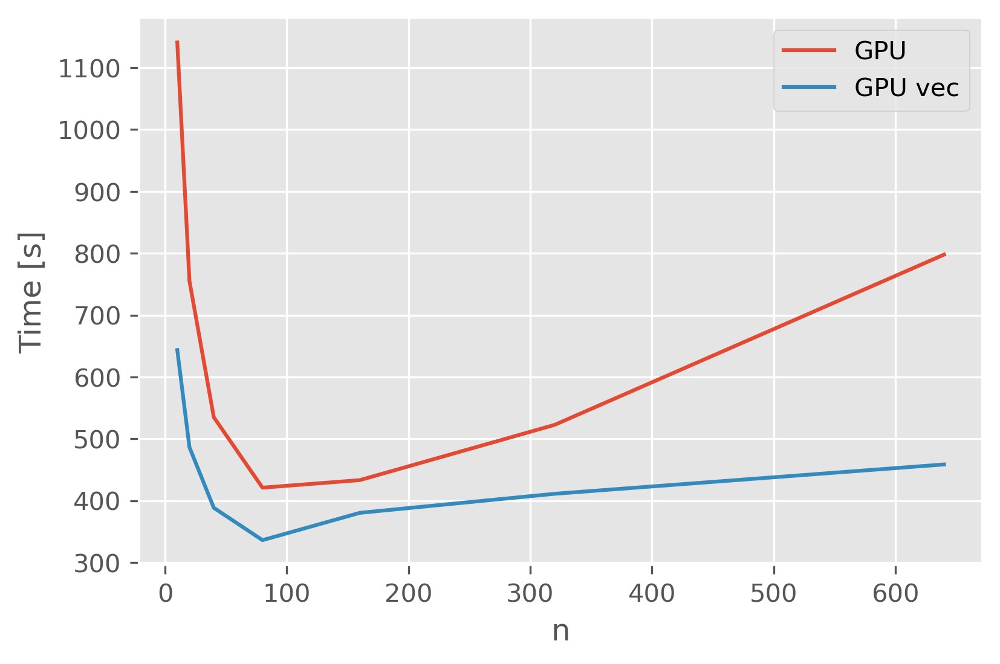

Weekly Progress Report#
Week 9 (28.02.2022-04.03.2022)#
While Bayesian statistics provide deep insights into the parameter space of a certain model, a major drawback are the long execution times. When the same bayesian model is fit to multiple datasets, parallelization of the sampling step might help overcome this drawback. Graphical Processing Units offer an oppertunity to parallelize a large amount of tasks, making attempts to sample a large amount of models simultanously on a GPU an interesting experiment. The developers of pymc recently implemented a jax backend making it possible to run Nuts on the GPU.
After developing on methods for feature extraction from data-dependent-acquisition datasets, the next step in a prototype pipeline for a bayesian precursor feature analysis is the data transfer to the model. Bayesian statistics provide deep insights in the possible parameters of a model, however this comes with rather long sampling runtimes. But since the evaluation of two features can be performed independently, parallelization might help overcome this drawback. Nevertheless we need to keep in mind, that the evaluation of a single feature gives rise to multiple threads corresponding to the number of chains used for sampling. It is obvious that running multiple feature evaluations parallely - each running e.g. 4 chains parallely - quickly pushes the typical workstation CPU to it’s limits. However graphical processing units (GPU) might be of help here, since they employ a significant higher number of processing cores. Pymc v4 comes with a jax backend allowing for sampling bayesian models with NUTS on the GPU. The idea here is not to put on model fit at at time on the GPU but to fit n models simultanously (Fig. 1)

Fig 1: Multiple instances of the same bayesian model simultanously fit to data on GPU

Fig 2:

Fig 3:

Fig 4:
CPU breakdown for bigger models in pymc4
Put GLM model in pystoms
Model Evaluation for GLM in pystoms
Parallelized GLM model
Feature Evaluation Manager
Test Model on GPU
[7]:
import pandas as pd
import seaborn as sns
import matplotlib.pyplot as plt
plt.style.use("ggplot")
[4]:
CPU = pd.read_csv("dataCPUD310.csv",index_col=0)
GPU = pd.read_csv("dataGPUD310.csv",index_col=0)
[6]:
GPU
[6]:
| D1 | D2 | D3 | GPU_times | GPUv_times | Model_build_times | |
|---|---|---|---|---|---|---|
| 0 | 640 | 1 | 10 | 5533.299187 | 2937.242950 | 2.373700 |
| 1 | 64 | 10 | 10 | 1064.418569 | 635.294347 | 0.054022 |
| 2 | 32 | 20 | 10 | 706.487763 | 472.834575 | 0.104229 |
| 3 | 16 | 40 | 10 | 476.422270 | 378.841688 | 0.199790 |
| 4 | 8 | 80 | 10 | 346.796392 | 334.466776 | 0.392063 |
| 5 | 4 | 160 | 10 | 352.092704 | 430.540143 | 0.759313 |
| 6 | 2 | 320 | 10 | 272.473488 | 367.375130 | 1.569888 |
| 7 | 1 | 640 | 10 | 985.415023 | 421.705749 | 3.048243 |
[22]:
D2 = GPU.D2
Fig, ax = plt.subplots()
Fig.set_dpi(300)
ax.plot(D2,GPU.GPU_times,label="GPU parallel",color="green")
ax.plot(D2,GPU.GPUv_times,label="GPU vectorized",color="blue")
ax.plot(D2,CPU.CPU_times,label="CPU",color="red")
ax.set_xlabel("Model Size")
ax.set_ylabel("Time [s]")
ax.legend()
plt.show()
[22]:
<matplotlib.legend.Legend at 0x7f12d3e30970>
[25]:
D2 = GPU.D2[1:]
Fig, ax = plt.subplots()
Fig.set_dpi(300)
ax.plot(D2,GPU.GPU_times[1:],label="GPU parallel",color="green")
ax.plot(D2,GPU.GPUv_times[1:],label="GPU vectorized",color="blue")
ax.plot(D2,CPU.CPU_times[1:],label="CPU",color="red")
ax.set_xlabel("Model Size")
ax.set_ylabel("Time [s]")
ax.legend()
plt.show()
[ ]: